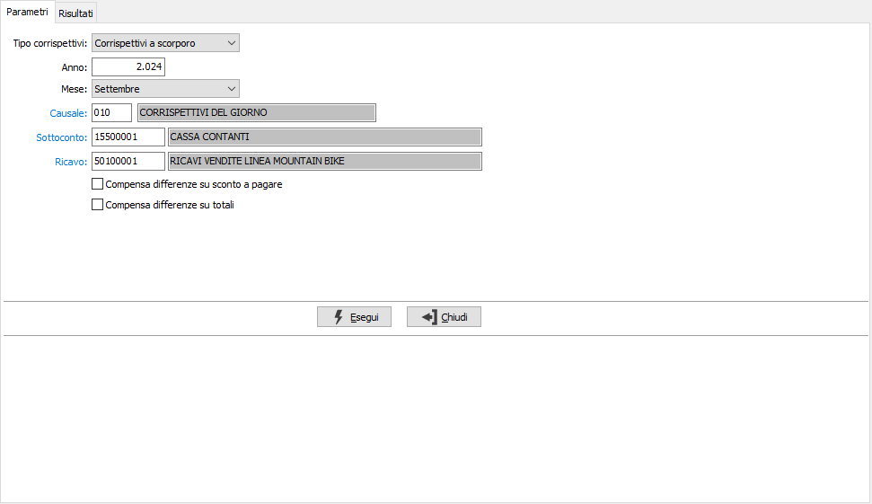
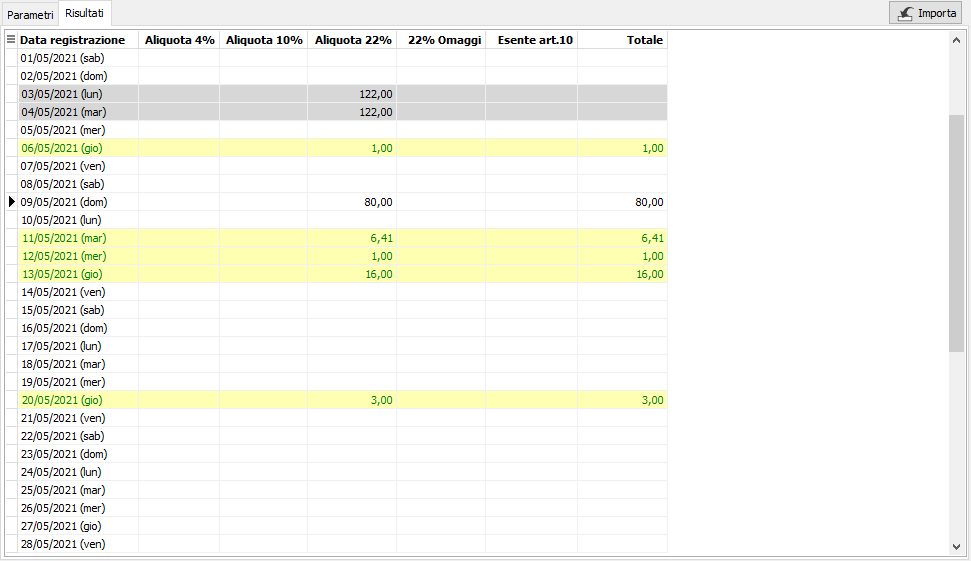
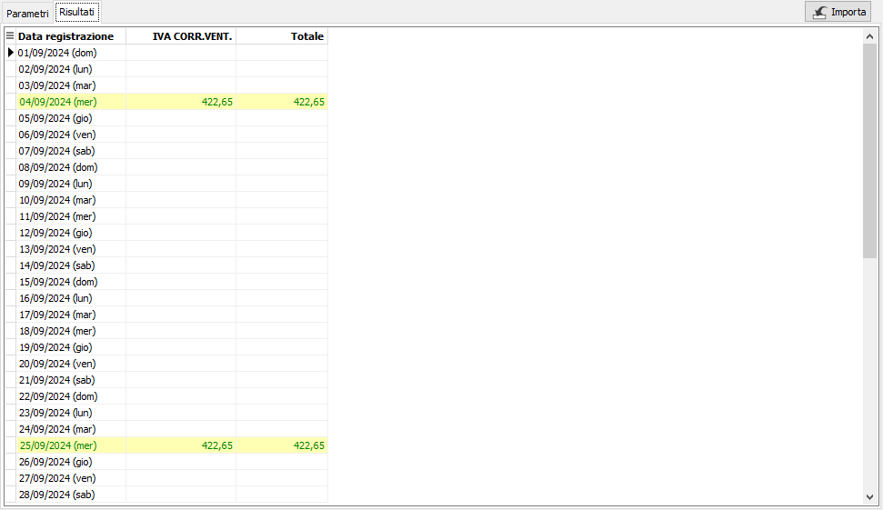
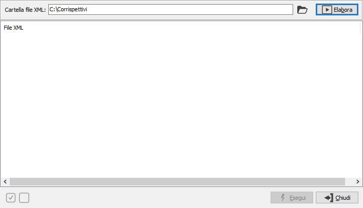
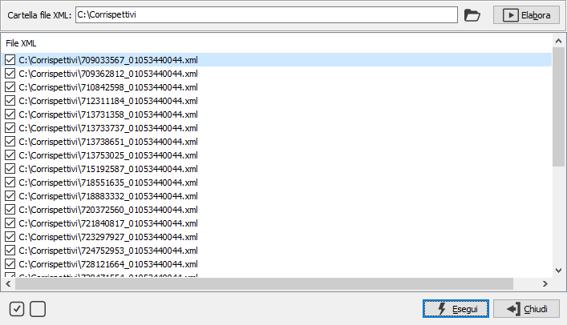
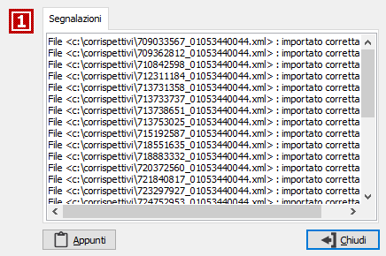
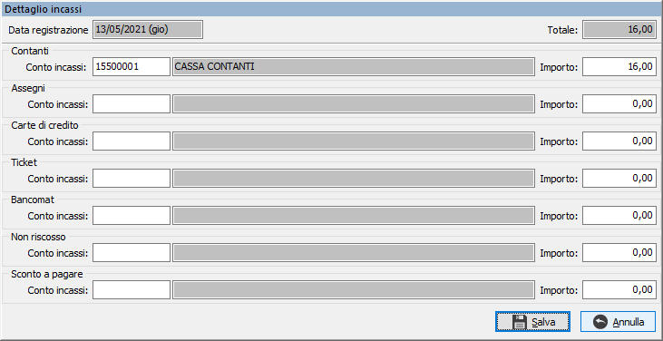

Registrazione rapida corrispettivi
Il programma consente la registrazione rapida dei corrispettivi di vendita.
E' necessario configurare la procedura prima del primo utilizzo, attraverso la compilazione dell’apposita configurazione “Registrazione rapida corrispettivi” all’interno della quale vanno indicati i codici Iva da trattare, le causali contabili ed i conti di ricavo, o i conti di ricavo in combinazione con i codici Iva, da utilizzare per la registrazione contabile.

Nei parametri di selezione è necessario indicare il tipo di corrispettivi da elaborare: a scorporo o ventilabili. Se da configurazione contabilità entrambi i campi (Corrispettivi a scorporo e corrispettivi ventilabili) sono disabilitati non sarà consentito l'accesso alla procedura; se è abilitata una sola delle gestioni il campo è disabilitato e riporta l'indicazione della gestione attiva; altrimenti è abilitato e cambiando gestione vengono proposti i relativi campi per causale e ricavo; solo in questo caso (entrambe le gestioni abilitate) viene effettuato un controllo sulle causali contabili per verificare che le causali relative alla registrazione dei corrispettivi abbiano numero registro Iva differenti in relazione alla gestione (scorporo o ventilabili). Non sarà possibile effettuare la registrazione se sono presenti casuali relative a tipologie di corrispettivi differenti con stessa serie registro Iva.
Sono presenti come parametri di selezione l'anno, il mese, la causale, il sottoconto ed il conto di ricavo necessari per poter generare i movimenti contabili; la causale ed i sottoconti vengono proposti in automatico dalla configurazione, l'anno ed il mese vengono proposti in automatico in base alla data corrente impostata in OS1; possono essere utilizzate causali che si riferiscono a sezionali differenti per registrare movimenti nella stessa data; sono presenti due caselle di spunta alternative l'una all'altra ed utilizzate dalla fase di importazione: "Compensa differenze su sconto a pagare": se la casella è spuntata le eventuali differenze tra il riepilogo totali e la somma di imponibili ed imposta sarà assegnata all'importo relativo allo sconto a pagare; "Compensa differenze su totali": se la casella è spuntata le eventuali differenze tra il riepilogo totali e la somma di imponibili ed imposta sarà scalata dai totali in concorrenza cominciando dal totale contanti; saranno considerati solo i totali valorizzati.
Nella griglia dei Risultati, vengono riportati tutti i giorni del mese selezionato, per i corrispettivi a scorporo, le colonne relative alle aliquote Iva configurate ed è consentito l’inserimento dei valori dei corrispettivi indicandoli nelle colonne delle varie aliquote Iva; cliccando sulla barra del titolo della griglia l'intestazione passa da aliquota Iva a conto di ricavo assegnato. I dati eventualmente già presenti vengono visualizzati su sfondo bianco, e sono modificabili, se ancora non è stato generato il movimento contabile, oppure su sfondo grigio e non modificabili, se già generato il movimento contabile. I giorni per cui sono presenti dati importati hanno uno sfondo giallo chiaro.

Per i corrispettivi ventilabili cambia solo la visualizzazione delle colonne Iva e viene mostrata una sola colonna relativa al codice Iva di configurazione.

Se previsto in configurazione è presente il pulsante di importazione; premendolo si accede alla finestra di selezione dei file XML che possono essere scaricati dal portale fatture e corrispettivi; il percorso predefinito viene proposto in base alla configurazione.

Premendo il pulsante Elabora vengono ricercati i files nel percorso selezionato e relativi al periodo che si sta elaborando; vengono mostrati nel corpo della finestra con la spunta predefinita.

è possibile togliere e mettere la spunta singolarmente per ogni file oppure con i pulsanti in basso a sinistra per tutti i files presenti nell'elenco; la pressione sul pulsante Esegui avvia l'importazione dei files che terminerà con una finestra in cui vengono mostrati i risultati dell'importazione che sia andata a buon fine o meno; i files importati correttamente vengono spostati automaticamente sotto delle cartelle create automaticamente con una struttura ad albero per anno, mese e giorno dove nella cartella del giorno sono presenti i files importati. La selezione dei file XML controlla che il file sia della stessa tipologia di corrispettivi selezionata nei parametri e se differente non elabora il file segnalandolo ed il file rimane nella cartella originale; di conseguenza se si ha una situazione mista si elabora prima una tipologia ed i relativi file vengono processati, poi si elabora l'altra tipologia e vengono elaborati i files rimanenti.

Al termine dell'importazione si ritorna sulla pagina risultati con i dati importati che hanno popolato la griglia nei relativi giorni ed alle relative aliquote, evidenziati con un colore giallo chiaro.

E’ possibile suddividere il totale incassato per tipologia di incasso (contanti, assegni, bancomat, carte di credito, ticket) una volta inseriti gli importi del giorno, tramite il doppio clic del mouse sulla riga interessata; compare la finestra mostrata a lato, dove sarà possibile inserire i vari importi fino a concorrenza del totale del giorno; i giorni che comportano una suddivisione sono facilmente riconoscibili in quanto scritti in verde. Se gestita l'importazione saranno presenti anche i valori relativi a "Non riscosso" e "Sconto a pagare".Tramite i pulsanti presenti nella Toolbar sarà possibile effettuare la stampa di quanto mostrato a video e con il pulsante Salva effettuare il salvataggio dei valori nella relativa tabella; sarà inoltre richiesto se generare i movimenti contabili ed Iva che potranno essere generati anche in un secondo momento. Se il movimento contabile viene eliminato, sarà sufficiente accedere al mese relativo ed effettuando nuovamente l'elaborazione ed il salvataggio sarà possibile generare nuovamente i movimenti.